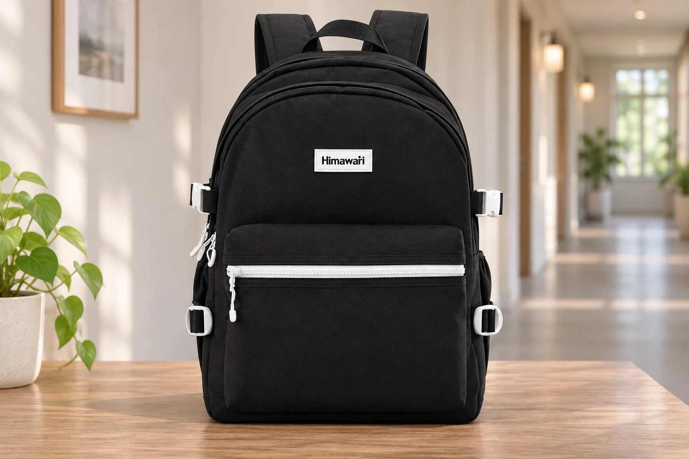
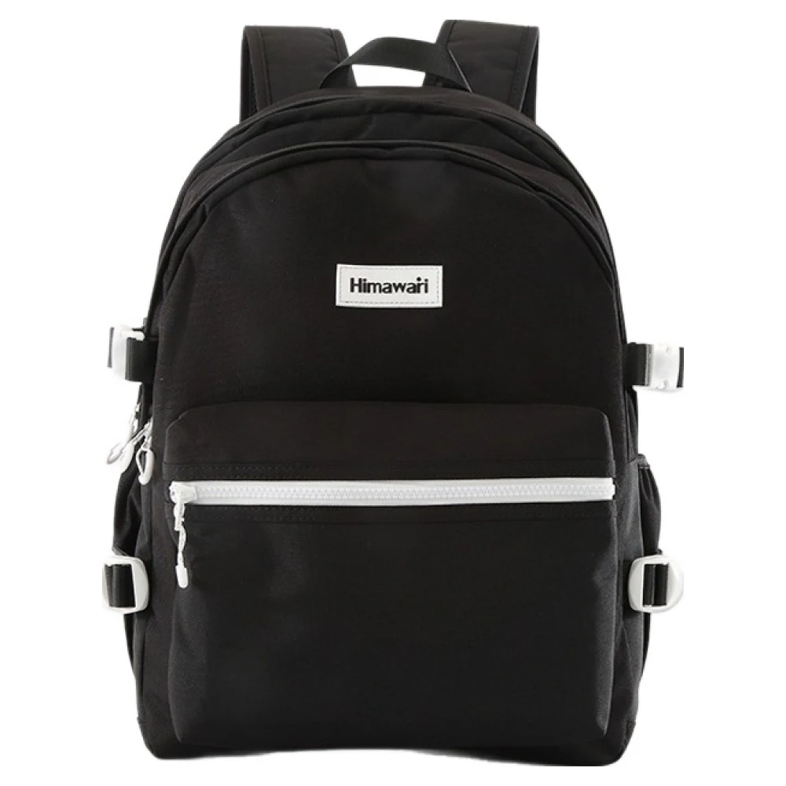
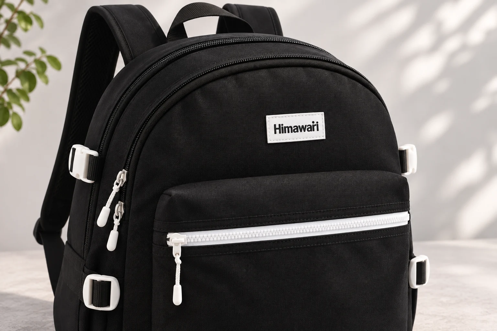

불빛이 약한 곳에서 백팩 지퍼를 찾는 법

불을 켜 둔 방에서는 백팩 앞주머니의 지퍼를 금방 가리킬 수 있습니다. 현관에 내려놓은 가방에서 같은 지퍼를 찾을 때는 손이 다른 곳으로 갈 수 있습니다. 가까이 보이는 손잡이를 잡았는데 정작 손잡이가 달린 지퍼는 위쪽 입구를 따라 이어지는 식입니다. 빛이 약할수록 손잡이 하나보다 그 손잡이가 어느 지퍼에 달렸는지 확인할 단서가 필요합니다.
흰 선이 보이면 어디까지 이어지는지 봅니다
히마와리 No.9290 블랙의 정면에는 검은 몸판 아래쪽을 가로지르는 흰 지퍼가 있습니다. 몸판 위쪽에는 둥근 윤곽을 따르는 검은 지퍼 선이 보입니다. 정면 사진을 놓고 보면 흰 선은 앞주머니의 너비를 따라 뻗고 검은 선은 가방의 윗부분을 돌아갑니다. 가방 옆에는 흰색 부품도 있어서 색만 기억하면 처음 눈에 들어온 흰 부분이 앞주머니 지퍼인지 다시 봐야 합니다.
No.9290 제품 정보의 외부 크기는 가로 30 × 세로 42 × 폭 18cm, 무게는 950g입니다. 제조사 카탈로그 42페이지의 9290 기준입니다. 여기서 살필 위치는 앞주머니의 가로선과 윗입구의 곡선입니다. 외부 치수로 두 지퍼 사이의 간격이나 앞주머니 입구의 길이까지 알기는 어렵습니다.

현관등이 가방 앞쪽을 비추고 있다면 사진에서 본 것처럼 검은 천 위로 흰 선의 일부가 눈에 들어올 수 있습니다. 보이는 부분만으로 바로 손잡이를 고르기보다 선이 앞주머니 위쪽을 가로지르는지 봅니다. 가방 옆에 짧게 드러난 흰색 부품과 앞면을 길게 가로지르는 선은 모양과 위치가 다릅니다. 어느 쪽을 봤는지 알아야 손을 뻗을 방향이 정해집니다.
가방을 돌렸을 때도 같은 자리에 있는 단서
가방 앞면이 자신을 향할 때 사진의 좌우를 그대로 떠올리기는 쉽습니다. 하지만 벽에 기대 놓다가 몸판을 반쯤 돌리면 정면에서 길게 보였던 지퍼도 짧게 보입니다. 가까운 모서리에는 앞주머니 지퍼의 끝과 윗입구에서 내려온 손잡이가 한꺼번에 보일 수 있습니다. 이때는 보이는 손잡이의 높이만으로 어느 쪽인지 판단하기 어렵습니다.
가방이 안정되게 놓인 상태라면 앞주머니의 가장자리부터 손끝으로 짚어 볼 수 있습니다. 바깥으로 도드라진 앞주머니를 찾고 그 윗부분을 따라가면 살펴볼 범위가 좁아집니다. 위쪽 입구를 열려는 날에는 가방을 드는 손잡이 가까이에서 둥근 윗선을 먼저 짚어 봅니다. 지퍼 손잡이에 닿았다면 손잡이가 붙은 줄이 어디로 이어지는지 확인합니다. 눈에는 짧게 보였던 선도 앞주머니를 따라 가로로 놓였는지, 윗부분에서 옆으로 돌아 내려오는지에 따라 구분해 볼 수 있습니다.
지퍼 손잡이는 지퍼를 어디까지 닫았는지에 따라 위치가 달라집니다. 가방을 집에 가져왔을 때 찍은 사진과 며칠 사용한 뒤의 모습을 비교하면 손잡이가 같은 자리에 있지 않을 수 있습니다. 앞주머니 윗부분이나 몸판의 둥근 가장자리처럼 가방에 붙은 곳을 기억해 두면 사진 속 손잡이 위치를 그대로 외웠을 때보다 손을 어디에 둘지 정하기가 수월합니다. 두 입구를 손끝으로 구분하기 어려우면 가방을 조금 돌려 지퍼가 이어지는 길을 다시 봅니다.
흰 지퍼가 그림자에 들어간 저녁
한쪽에서만 불빛이 들어오는 현관을 생각해 봅니다. 정면에서는 가로선이 보였는데 가방 위로 몸을 숙이니 자기 그림자에 가려 흰 선의 끝이 흐려집니다. 가방을 만질 수 있는 거리까지 다가간다고 눈에 들어오는 빛까지 늘어나는 것은 아닙니다. 고개를 옆으로 옮겼을 때 보이는 부분이 있는지, 가방을 돌리면 앞주머니가 불빛 쪽을 향하는지 살펴볼 만합니다. 같은 색의 지퍼도 어느 면에 빛이 닿는지에 따라 보이는 정도가 달라집니다.

앞주머니를 찾는다고 흰 부분을 계속 눈으로 좇을 필요는 없습니다. 희미하게 보이는 가로선으로 대략의 높이를 잡고 손끝으로 주머니의 윗부분을 짚어 볼 수 있습니다. 반대로 손에 먼저 닿은 지퍼가 어느 입구인지 애매하면 선이 이어지는 쪽에 빛이 닿도록 가방을 돌려 봅니다. 한 가지 단서가 흐려졌을 때 다른 단서로 이어 가는 방법입니다. 선의 방향이나 주머니 위치가 여전히 구분되지 않으면 가방을 더 밝은 곳에 두고 확인합니다.
지퍼 손잡이가 보이는 것과 열 곳을 알아본 것은 별개의 일입니다. 위쪽 지퍼의 손잡이가 옆으로 내려와 앞주머니 끝과 가까운 가방을 생각해 보세요. 손가락이 먼저 닿은 손잡이를 잡은 채로 그 아래의 지퍼 줄까지 짚어 보면 어느 입구에 연결됐는지 살필 수 있습니다. 손잡이 근처의 짧은 부분에서 판단하기 어렵다면 앞주머니 가운데처럼 두 선이 서로 떨어지는 곳으로 손을 옮겨 봅니다. 거기서 원하는 선을 다시 따라가는 편이 같은 모서리를 계속 더듬는 것보다 구별하기 쉽습니다.
집에서 먼저 확인해 볼 한 장면
자주 쓰는 가방으로 비교해 보려면 평소 열고 닫는 입구 하나를 고릅니다. 방에서 가방을 내려놓고 어느 부분에 손을 댔을 때 찾으려는 지퍼에 닿는지 확인합니다. 평소 현관에 가방을 놓는 방향으로 돌린 뒤에도 같은 부분을 찾을 수 있는지 살펴봅니다. 손잡이를 한 번에 잡았는지 시간을 재기보다 어느 지점에서 다른 입구로 손이 갔는지 보는 편이 다음에 써먹기 좋습니다. 예를 들어 두 줄이 가까워지는 옆면에서 자꾸 손이 엇갈린다면 앞주머니를 열 때는 앞면 가운데에서 가로선을 찾아 출발해 볼 수 있습니다.
이미 쓰고 있는 백팩에 밝은 지퍼가 없어도 비교할 부분은 있습니다. 앞주머니의 윗선이 손끝에 닿는지, 윗입구가 가방을 드는 손잡이에서 어느 쪽에 놓이는지를 봅니다. 앞면이 납작해 주머니의 가장자리가 잘 구분되지 않는다면 사진에서 두 입구의 높이와 간격을 살핀 뒤 손으로 그 차이를 짚어 봅니다. 반대로 새 백팩의 사진을 보는 중이라면 지퍼 색과 함께 한 장에 두 입구가 나오는 자료를 살펴보세요. 어느 입구가 다른 입구와 가까워지는지 보려면 손잡이만 크게 잘라 놓은 사진보다 전체 앞면과 옆면이 도움이 됩니다.
사진에서 고른 단서가 평소의 자세에서도 손에 닿는지 살펴볼 만합니다. 가방을 바닥에 눕혀 두면 앞주머니 위로 손을 내리기 쉽지만 선반에 세워 놓으면 손잡이가 선반 안쪽을 향할 수 있습니다. 바닥에서 쉽게 찾았던 지퍼를 선반에서 자꾸 놓친다면 우선 가방을 두는 방향을 봅니다. 앞면이 자신을 향하도록 놓았을 때도 헷갈리는지 확인해 보면 빛이 닿는 면과 손이 닿는 위치 가운데 무엇이 달라졌는지 짚을 수 있습니다. 그 자리에서 가방을 돌리기 어렵다면 처음부터 꺼내 놓고 어느 입구인지 확인하는 방법도 있습니다.
No.9290 사진에서 기억할 만한 자리는 앞주머니를 가로지르는 흰 선과 몸판 위를 도는 검은 선입니다. 자신이 쓰는 가방에서는 이처럼 두 입구가 갈라져 보이는 곳을 하나 찾아 두면 됩니다. 다음에 빛이 약한 자리에서 가방을 열 때 어느 부위에서 손을 대기 시작할지 정해 두기만 해도 확인할 범위가 구체적입니다.